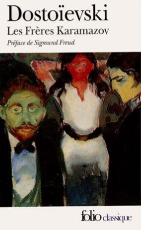

« Ce royaume des éléments désordonnés1 », - écrira sur la Russie Piotr Tchaadaïev dans ses réflexions philosophiques. Mais c’est surtout dans l’œuvre de Dostoïevski, plus particulièrement dans les Frères Karamazov, que le chaos russe fut le mieux présenté. L’auteur fait de ce dernier un élément fondateur du caractère national2.
Le critique littéraire Vassili Rozanov tente d’expliquer le chaos dostoïevskien d’une manière suivante : « C’est la laideur et la souffrance de l’absence de lois de la vie quotidienne. L’homme est désorienté dans sa recherche de ces lois à respecter, la recherche qui le fait basculer dans tous les sens3 ».
Déjà à l’époque, les contemporains de Dostoïevski ont observé dans son œuvre en question le résumé de certains traits socio-psychologiques de la vie russe4. Le chaos montré par Dostoïevski a une telle puissance qu’il est capable de tout détruire autour de lui. Dostoïevski explique cette force destructrice par l’absence, dans la société russe, de fondement solide, de règles bien établies de la vie.
Voilà pourquoi tous les grands bouleversements ont toujours effacé en Russie « l’idée même de tout ce qui a été construit auparavant5 ».
Pour Fedor Stepun, le phénomène du chaos s’est démontré plus qu’ailleurs dans le bolchévisme, donnant l’exemple parfait du déchaînement désordonné et désorienté propre à la vie russe5.
La révolution de 1917 illustre la prophétie de Dostoïevski avec sa philosophie de chaos, considéré par le philologue Boris Vycheslavtzev comme la découverte sociologique la plus importante de l’écrivain : « Maintenant quand l’élément russe s’est déchainé au risque d’inonder le monde entier, on doit avouer que Dostoïevski est un prophète. Il a réussi à démontrer le phénomène le plus réel et le plus profond de la vie russe – ses forces souterraines cachées qui ont émergé en impressionnant tous les peuples et avant tout le peuple russe lui-même6 ».
La Russie n’est bien évidemment pas le seul pays qui a connu le chaos dans son histoire. Tous les peuples vivent un jour ou l’autre ce genre de période. Mais ce qui est exceptionnel avec la Russie, c’est que l’état de chaos continue à y persister à tel point qu’il devient une partie constante de la mentalité russe à cause du primat du sentiment sur la raison propre à la civilisation russe. Au début du xxe siècle, Stepun affirme que la pensée russe aspire consciemment à la synthèse mais se dirige inconsciemment vers le chaos. Etant chaotique elle-même, cette pensée entraine dans le chaos toute la culture russe en général7.
Il est impossible de parler du chaos russe sans mentionner le nom de Léon Tolstoï. Son chaos se rapproche dans son essence du phénomène de la spontanéité naturelle dans le comportement de l’être humain. Selon l’écrivain, l’homme doit impérativement refuser l’organisation de la vie telle qu’elle est artificiellement imposée par les normes établies de la civilisation afin de rendre la vie similaire aux éléments chaotiques de la nature, autrement dit libre, véritable et simple. L’homme ne doit pas résister par sa raison et par sa conscience au développement naturel et chaotique de l’existence simple et sage dans sa simplicité. Ce sont, selon l’écrivain, les personnes simples, spontanées et proches par la simplicité de leur vie de la nature, qui détiennent la sagesse.8
Parmi les explications du caractère constant et répétitif du chaos russe on peut mentionner celle d’Evgueni Troubetskoï qui parle plutôt de la période transitoire blanche-rouge dans l’histoire russe. Troubetskoï reprochent aux russes de l’époque d’avoir leurs personnalités peu prononcées, autrement dit un faible « je ». Parlant de la folie de la Révolution russe ainsi que de la folie de la réaction qu’elle a suscitée, Troubetskoï estime que ces deux phénomènes ont une cause commune – une faible émergence du « je » dans une masse grise sans forme. Cette absence d’expression personnelle chez les Russes explique, selon le penseur, leurs brusques passages d’un état immobile et figé à une rébellion désordonnée, d’une résignation naïve à un utopisme révolutionnaire non pas moins utopique10. Pourquoi pas. Un avis comme un autre.
Le combat entre le chaos et la civilisation dans la vie russe dure depuis des siècles. La civilisation a essayé à plusieurs reprises de prendre le dessus sur le désordre et les ténèbres (souvenons-nous des tentatives de Pierre le Grand de « civiliser » la Russie), mais en vain. Le chaos revient toujours ! Pourquoi vouloir imposer une vie historique artificielle au peuple dont la destinée est, depuis déjà plusieurs générations, de vivre « en dehors de l’histoire11 » ?
A.G.
Notes :
1 Cf. à ce sujet Pëtr Čaadaev, Sočinenija [Œuvres], M., Pravda, 1989, p. 20.
2 T. Blagova, B. Emel’janov, Filosofemy Dostoevskogo : tri interpretacii (L. Šestov, N. Berdjaev, B. Vyšeslavcev) [Études philosophiques de Dostoïevski : trois interprétations (L. Chestov, N. Berdiaev, B. Vycheslavtsev)], Ekaterinburg, Izdatel’stvo Ural’skogo Univetsiteta, 2003, p. 242.
3 Vassilij Rozanov, « O Dostoevskom » [Sur Dostoïevski], in O Dostoevskom. Tvorčestvo Dostoevskogo v russkoj mysli 1881-1931 godov, textes réunis par V. Borisov et A. Roginskij, M., Kniga, 1990, p. 72-73.
4 Cf. Fëdor Dostoevskij, Polnoe sobranie sočinenij v 30 tomax [Œuvre complète en 30 volumes], Leningrad, Nauka, kniga 1, 1971-1990, t. 28.
Ibid., t. 16, p. 329.
6 Fëdor Stepun, « Mysli o Rossii. Očerk 1 », in Fëdor Stepun, Sočinenija [Œuvres], textes réunis et annotés par V. Kantor, M., Rossijskaja političeskaja ènciklopedija, 2000, p. 205.
7 Boris Vyšeslavcev, Russkaja stixija u Dostoevskogo [Chaos russe dans l’œuvre de Dostoïevski], Berlin, Obelisk, 1923, p. 10.
8 Fëdor Stepun, Sočinenija [Œuvres], op. cit., p 791.
9 Nikolaj Berdjaev, « L. Tolstoj» [L. Tolstoï], in N. A. Berdjaev o russkoj filosofii, textes réunis et annotés par B. Emel’janova et A. I. Novikova, Sverdlovsk, Izdatel’stvo Ural’skogo Instituta, 1991, t. 2, p. 40.
10 Evgenij Trubeckoj, « Dva zverja » [Deux bêtes], in Evgenij Trubeckoj, Smysl žizni [1918], M., Izdatel’stvo Respublika, 1994, p. 323.
11 Cf. Osval’d Špengler, Zakat Evropy [Le Declin de l’Occident] [1918-1922], trad. de l’allemand par I. Maxan’kov, M., Mysl’, 1998, t. 2, p. 198.
Partager cette page